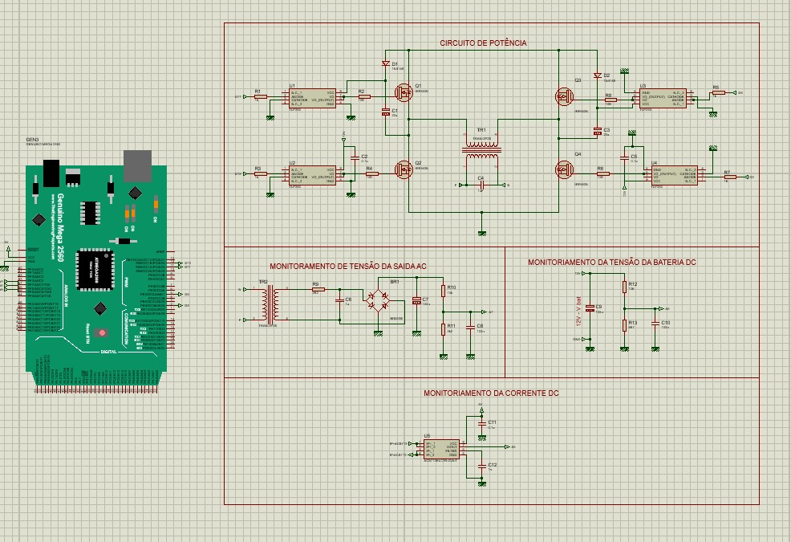
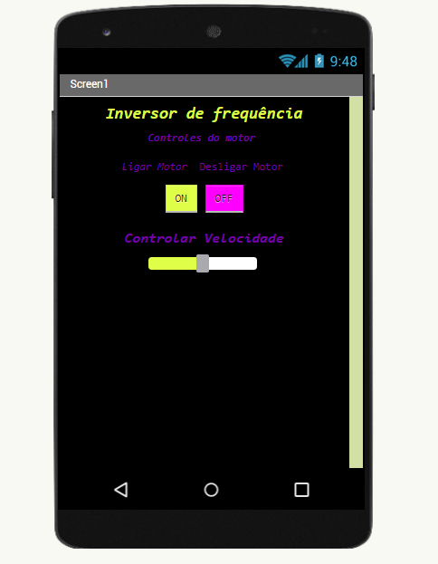

Inversor de frequência é utilizado para controlar a velocidade de um motor elétrico trifásico. Esse tipo de controlador aciona um motor elétrico e promove a variação da frequência e da tensão que é fornecida a esse motor, dominando a sua velocidade e a potência consumida.
Essa variação ocorre quando a onda senoidal passa pelo circuito eletrônico que tem como função "Filtrar" essa onda de tensão, fazendo com que ele possa controlar a frequência desejada para que o motor funcione na velocidade que foi solicitado pelo operador através da interface IHM
O Circuito de potencia responsavel por fazer esse controle de frequência é baseado no conseito de deixar controlar a passagem do semiciclo da tenção e que seja alimentado o motor apenas o necessario para aumentar a eficiencia e consumo da instalação
Esse controle é realizado por um aplicativo mobile que realiza esse controle de funcionamento do motor
